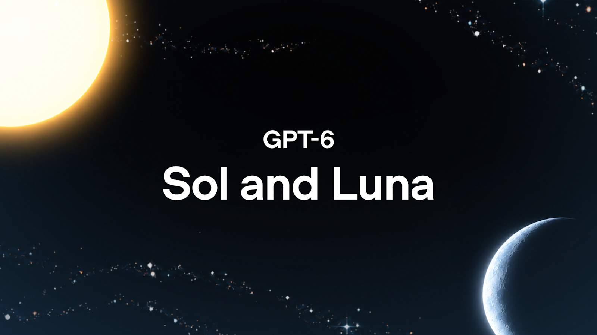
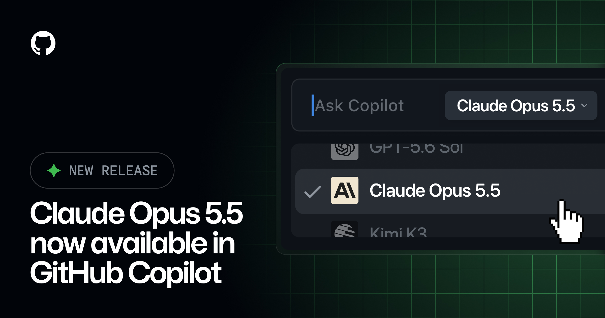
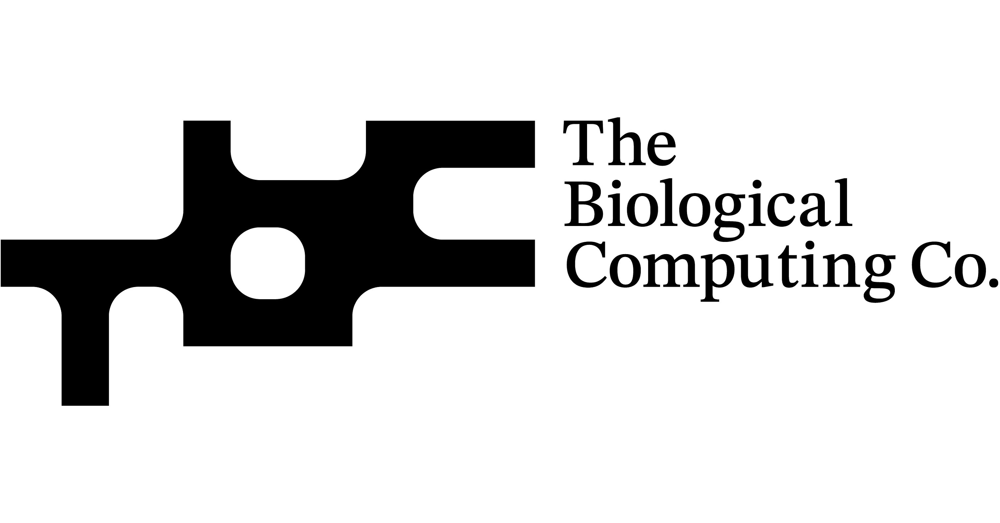
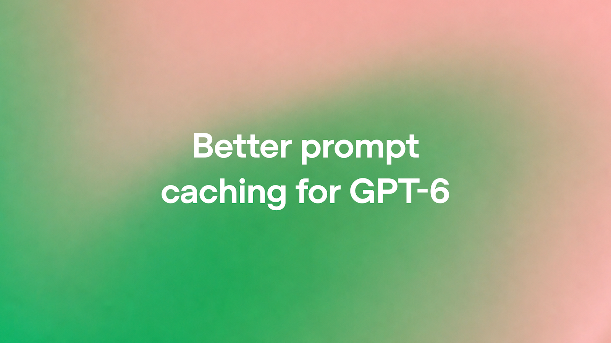
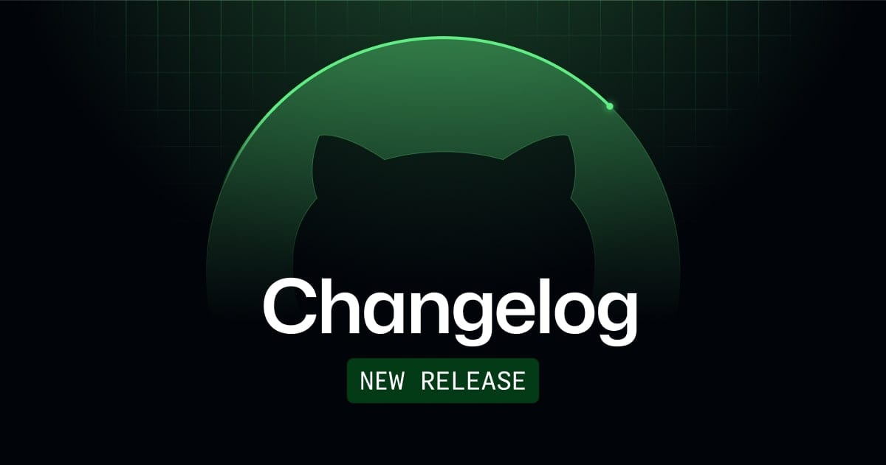
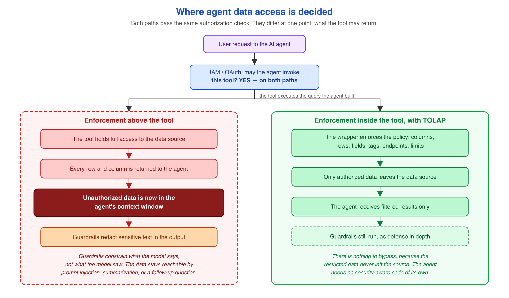
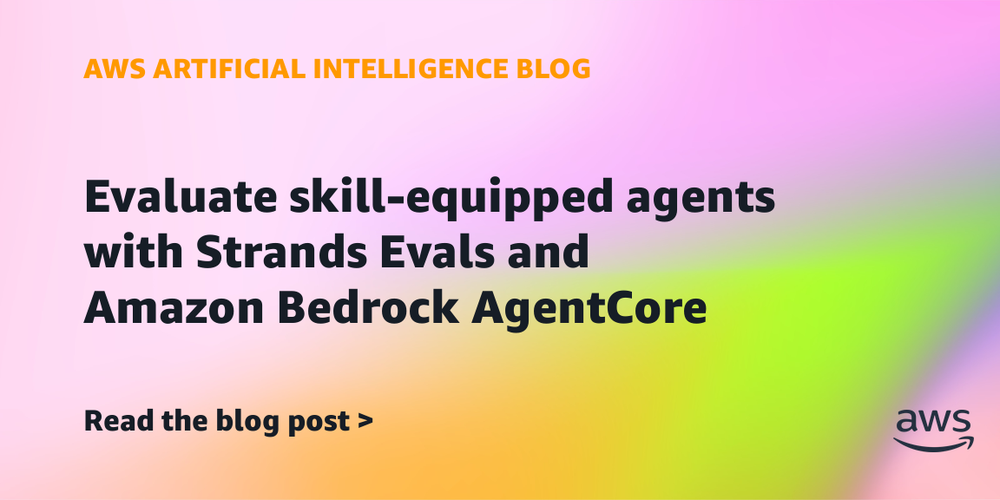
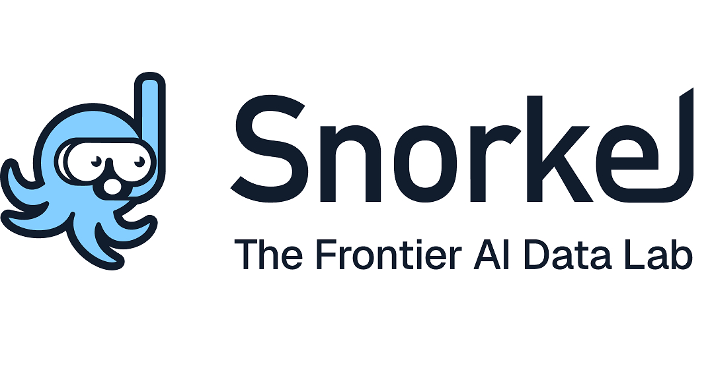
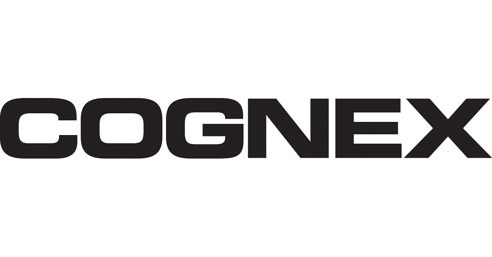
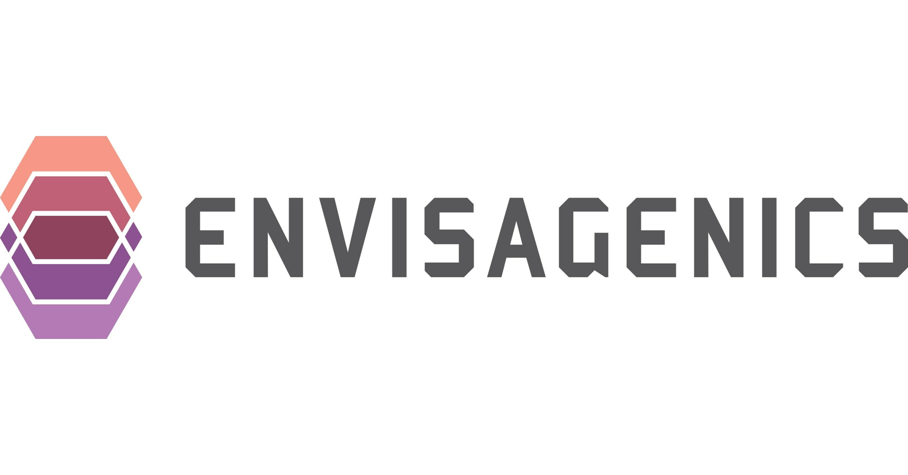

Government of the Netherlands
二十二方联名追问前沿模型控制权
来源: Government of the Netherlands · 2026-09-23 · 原文链接
挪威、芬兰、澳大利亚、加拿大、德国、新加坡、南非、欧盟委员会等二十二个国家与机构的领导人或代表发布联合声明，要求前沿AI公司建立透明安全协议，接受强制性的部署前测试和独立评估，并共享严重安全事故报告。声明还提议由联合国成员国研究设立可制定标准、支持核验，并在能力跨过阈值时召集各国的国际机构；它是一份政治倡议，尚未形成具有约束力的条约或统一阈值。
Janet 锐评：
二十二方把“人类保持控制”写进同一份声明，分量来自参与范围，难点却藏在执行细节：什么算前沿模型，独立评估者能看到多少，能力阈值由谁测，严重事故多久上报。没有共同测试集、访问权限和处罚路径，全球声明仍可能退化成各国各说一套。可一旦这些接口被定下来，模型公司面对的就不再只是自愿安全承诺，而是跨市场重复验证的硬成本。

OpenAI
OpenAI给两档GPT-6价格减半
来源: OpenAI · 2026-09-23 · 原文链接
OpenAI发布GPT-6 Sol与Luna，API名称分别为gpt-6-sol和gpt-6-luna。每百万token价格中，Sol输入/输出由GPT-5.6时期的4/20美元降至2/10美元；Luna由0.20/1.20美元降至0.10/0.50美元。公司称Sol在DeepSWE 1.1最高得68.8%，OSWorld 2.0 offline为60.5%，但这些评测来自研究环境或API，生产表现仍受系统提示、工具与工作流影响。
Janet 锐评：
价格对半砍，改变的不只是同一道题能跑几次，而是团队会把更长的上下文、更高的reasoning effort和更多重试默认塞进日常工作流。OpenAI给出的性价比图很凶，可竞品成本、fallback以及内部评测口径并不完全对齐。采购时若只比较每百万token，很容易把工具调用、缓存命中、任务成功率和人工返工漏在账外；真正该算的是一次可交付结果多少钱。
Alibaba Cloud / Associated Press
阿里用自研芯片重画全栈路线
来源: Alibaba Cloud / Associated Press · 2026-09-23 · 原文链接
阿里在云栖大会公布Zhenwu V900：216GB内存、芯间带宽1200GB/s，支持FP8和FP4，公司称性能为M890的三倍，计划2027年第一季量产商用；配套supernode路线最高指向50万卡。阿里同时把2032年全球数据中心容量目标设为20GW，并披露Qwen 4正在训练，后续Qwen 4.5与5路线规模预计为5万亿至10万亿参数。这些量产、容量与模型规模均为公司路线图，不是已交付产能。
Janet 锐评：
把芯片、网络、存储、云、模型和手机Agent放在同一张路线图上，阿里是在用vertical integration对冲高端GPU供应的不确定性。参数看起来够大，投资判断却落在几个很朴素的节点：V900能否按2027年第一季量产，20GW要靠什么电力与资本开支兑现，50万卡集群有没有稳定客户负载。发布会给的是上限，供应链和利用率才决定它是不是资产。

GitHub
GitHub接入Opus5.5并加水印
来源: GitHub · 2026-09-23 · 原文链接
GitHub Copilot开始逐步提供Claude Opus 5.5，覆盖Pro+、Max、Business与Enterprise用户，并可在VS Code、Copilot CLI、coding agent、移动端及多款IDE中选择。GitHub称早期测试中它以更少步骤和token完成了与Opus 5相近的任务，且能从多步错误中恢复；模型文本输出带水印，不额外增加token或费用，企业管理员可通过model policy管理访问。
Janet 锐评：
Copilot这次卖点不是一张更高的跑分表，而是少走步骤、能从错误里爬回来，还把文本水印带进企业分发。水印不收费很容易传播，管理员策略与渐进上线则提醒另一面：模型进了选择器，不等于所有团队已经拿到，也不等于长任务稳定性被第三方验证。

The Biological Computing Co. / PR Newswire
神经信号视频模型借AWS试商用
来源: The Biological Computing Co. / PR Newswire · 2026-09-23 · 原文链接
The Biological Computing Co.宣布与AWS合作，把源自活体神经元活动的软件层用于一个开源视频生成基础模型，并计划接入Trainium、SageMaker和AWS Marketplace。公司称该附加层不到基础模型的0.1%，可在传统AI硬件上运行，并带来最高五倍生成速度、约80%推理成本下降；基础模型名称、完整基准与规模化复现实验尚未公开，产品目前面向early access。
Janet 锐评：
活体神经元是最抓眼球的部分，可用户买到的仍是一层跑在普通硬件上的软件。五倍速度和八成降本在公开基准缺席时只能算公司主张；早期客户更该问基础模型、画质损失与重复测试条件。

OpenAI
GPT-6缓存折扣拉到九成
来源: OpenAI · 2026-09-23 · 原文链接
OpenAI为GPT-6改进prompt caching：可复用前缀在30分钟窗口内保持缓存，cached input最高享90%折扣，并新增Dashboard、cache-miss诊断、explicit breakpoints与prewarming。通过configuration_update调整reasoning effort，或保持tool schema稳定后再用allowed_tools和tool_choice切换工具，也可继续复用旧缓存；模型、工具定义、设置或输入发生不兼容变化仍会miss。
Janet 锐评：
缓存把长Agent的成本问题从“少传一点字”变成前缀工程。九成折扣很甜，命中率却取决于上下文顺序、工具schema和会话设计；Dashboard只能照出浪费，架构乱了照样省不到。
NVIDIA Developer
DLSS5用三维引导重绘游戏画面
来源: NVIDIA Developer · 2026-09-23 · 原文链接
NVIDIA披露DLSS 5的3D-guided neural rendering：游戏引擎提供运动向量以及模型、结构、色调和语义mask，模型按一帧输入、一帧输出在本地RTX 50系列GPU上最高生成4K画面。公司强调输出具确定性与时间稳定性，并同步更新ACE语音模型及RTX Neural Shaders工具；画质、延迟和适配成本仍取决于开发者如何准备引导数据。
Janet 锐评：
生成式画面终于不再只靠一句prompt猜场景，游戏引擎把几何和语义控制权交给模型，才有机会守住连续帧。代价也清楚：每个项目都要准备mask、运动信息和调校预算，接SDK不等于免费升级美术管线。

GitHub
Copilot给C++仓库建持久索引
来源: GitHub · 2026-09-23 · 原文链接
GitHub Copilot CLI为C++项目默认启用whole codebase indexing。Microsoft C++ Language Server会利用编译信息建立跨已打开与未打开文件的持久symbol index，供定义、引用、实现和symbol search复用；首次构建会增加等待时间与内存占用，完成后动态更新，也可关闭并重启Copilot session。
Janet 锐评：
百万行C++最耗时间的常常不是生成代码，而是反复找符号和头文件关系。持久索引省掉重复发现，首次建库的内存与时间账仍得留给大仓库。
Alibaba Cloud
Qwen把多模态更新排进路线图
来源: Alibaba Cloud · 2026-09-23 · 原文链接
阿里同场展示Qwen 3.8-Max、Qwen 3.8-LiveTranslate、Qwen-Audio-3.1-TTS-Next与计划年内推出的Qwen Image 3.1。公司称3.8-Max在自动迭代33轮后把内部AA分数由40提高到45，并在芯片设计任务中连续运行60余小时、调用EDA工具超1万次；LiveTranslate则把其口径下的平均延迟由2.8秒降至2.3秒。这些为阿里自报案例与路线指标。
Janet 锐评：
同一个发布会第二次出现，只保留模型侧坐标：长周期Agent、多语翻译、音频和图像被排成产品节奏。数字很多，外部可复现基准很少，暂时把它当路线图，不当胜负表。
NVIDIA Developer
机密推理在B200保住九成六吞吐
来源: NVIDIA Developer · 2026-09-23 · 原文链接
NVIDIA在8张B200上测试confidential computing推理，使用DeepSeek-R1-0528-NVFP4、TensorRT LLM的PyTorch backend、32K输入与1K输出，并从1到16并发扫描。其结果显示，开启机密计算后output-token throughput保留了关闭时的96%以上，per-token latency额外开销低于5%；B200路径通过加密bounce buffer搬运数据，也改变了pinned memory等性能假设。数字来自NVIDIA受控环境。
Janet 锐评：
隐私推理过去常被当成性能税，这组结果把问题推进到可测的工程区间：在特定B200、特定模型与长上下文下，吞吐损失不到4%。别急着外推到任意GPU和batch；更有价值的是测试方法本身——安全开关一开，内存路径、并发和延迟都要重新量。采购方终于可以要求同负载、同精度、开关各跑一遍，而不是接受一句“支持confidential computing”。

AWS Open Source Blog
TOLAP管住Agent数据源权限
来源: AWS Open Source Blog · 2026-09-23 · 原文链接
AWS开源TOLAP，以Apache-2.0提供.NET、Python和TypeScript SDK，在数据库、API、vector store与object storage的数据源入口执行row、column、field和prefix级权限。策略采用most-restrictive-wins，支持purpose binding与只能收窄的delegation chain，并可叠加LLM semantic judge；没有接入TOLAP的直连路径仍可绕过它，semantic judge也不是确定性安全边界。
Janet 锐评：
Agent权限最怕在框架层写得很漂亮，换一条直连路径就全失效。TOLAP把拦截点压到数据源附近，也坦白语义judge只能做第二层。能不能覆盖所有旁路，比支持十四个框架更关键。

AWS Machine Learning Blog
Strands给Skill新增两层评测
来源: AWS Machine Learning Blog · 2026-09-23 · 原文链接
AWS为Strands Evals与Bedrock AgentCore增加Skill级评测：Skill Selection Accuracy判断每个被调用Skill是否选对，Skill Instruction Following按1、0.75、0.5、0.25、0五档评分，并把0.75及以上视为通过；Strands另有不调用模型的deterministic SkillInvoked。若Agent根本没调用Skill，judge-based evaluator不会给分，因此两类指标要配套使用。
Janet 锐评：
只评最终答案，会把“碰巧答对”和“正确调用Skill”混在一起。选择、遵循、是否调用分开计分，回归测试才知道坏在哪一层；两套阈值也不能直接互抄。
Palo Alto Networks
Unit42用多模型连续攻防巡检
来源: Palo Alto Networks · 2026-09-23 · 原文链接
Palo Alto Networks推出Unit 42 Continuous Frontier AI Defense，按年订阅提供持续攻击面发现、可利用性验证、attack path串联及代码修复或virtual patch建议。服务把Anthropic Mythos、OpenAI GPT-Cyber与开放模型放进multi-model harness，再由Unit 42专家验证结果；它面向企业完整环境的受控测试，厂商没有公开统一准确率或跨客户效果基准。
Janet 锐评：
安全厂商开始把前沿模型当红队班组，而不是聊天助手。多模型能覆盖各自盲区，人类专家仍负责证明漏洞能否串成攻击路径；这层复核若被销售话术省略，连续扫描只会制造更快的告警洪水。
今日核心预测

Snorkel AI / PR Newswire
Snorkel融资三点五亿美元扩建数据工厂
来源: Snorkel AI / PR Newswire · 2026-09-23 · 原文链接
Snorkel AI融资3.5亿美元，估值35亿美元，由Insight Partners与S32共同领投，Addition等新老投资者参与；公司没有在公告中给出轮次名称。资金将扩大agentic data factory，为前沿模型提供专家任务、环境、rubric及训练与评测数据。Snorkel另称其data-as-a-service业务近一年增长逾18倍、annualized revenue run rate达到3.75亿美元，均为公司口径。
Janet 锐评：
这轮钱抬高的不是传统标注外包，而是会设计专家任务、环境和评分规则的数据研究工厂。35亿美元估值配上公司自报3.75亿美元run rate，看起来已有收入锚，可18倍增长和客户质量仍缺少独立拆分。模型越会做复杂工作，训练数据就越像实验设计；Snorkel能否把高强度专家服务变成可复制产品，决定它拿到的是平台倍数还是人力倍数。

Cognex / PR Newswire
Cognex五亿美元收购RealSense
来源: Cognex / PR Newswire · 2026-09-23 · 原文链接
Cognex签署约5亿美元现金收购RealSense的协议，另计划设置三年5650万美元现金留任项目及约5000万美元RSU；交易预计第四季完成。RealSense预计2026年营收8000万至9000万美元、同比增长逾50%，交割前会把Facial Authentication产品线拆成独立公司，因此Cognex买到的核心是深度相机与机器人感知业务。
Janet 锐评：
约五亿美元买机器人视觉，还另列留任金与股权，说明人才和产品一起计价。按公司营收预估粗算，headline price约为今年收入的5.6至6.3倍；身份验证业务先拆走，也提醒市场别把RealSense的全部品牌资产都算进收购包。

Envisagenics / GlobeNewswire
十亿美元AI药研合作只付里程碑
来源: Envisagenics / GlobeNewswire · 2026-09-23 · 原文链接
Envisagenics与Boehringer Ingelheim签署多年研究合作与选择权协议，利用AI平台SpliceCore筛选实体瘤的RNA splicing-derived targets，再验证其用于ADC、T-cell engager和多特异抗体等疗法的潜力。Envisagenics有资格获得超过10亿美元的upfront、研究经费、选择权费、开发/监管/商业里程碑及销售royalty，但各部分金额未披露，十亿美元并非已到账现金。
Janet 锐评：
AI药研最容易被headline数字抬轿。超过十亿美元是许多年、许多靶点和临床节点的条件总和，眼下可确认的现金没有拆开；平台价值先由target validation证明，再由漫长临床兑现。